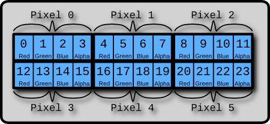
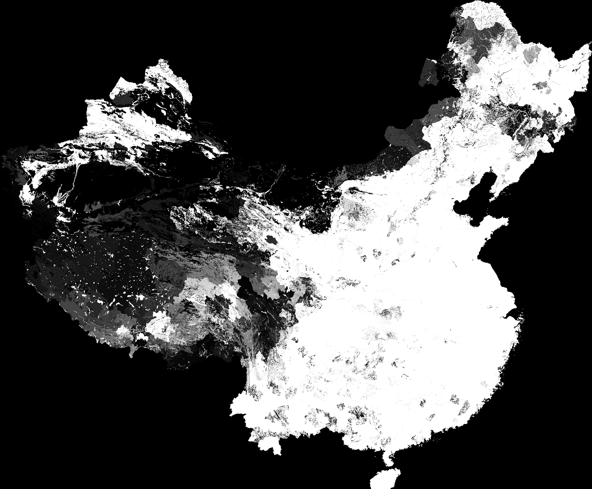
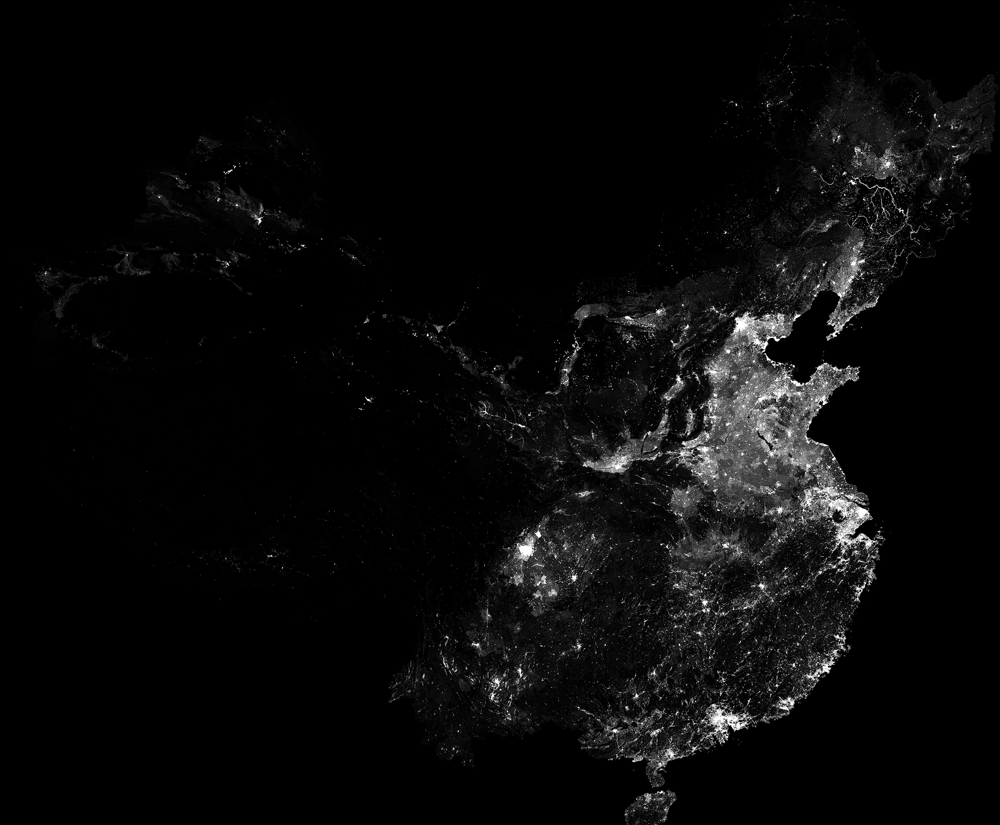
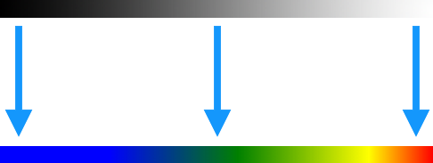
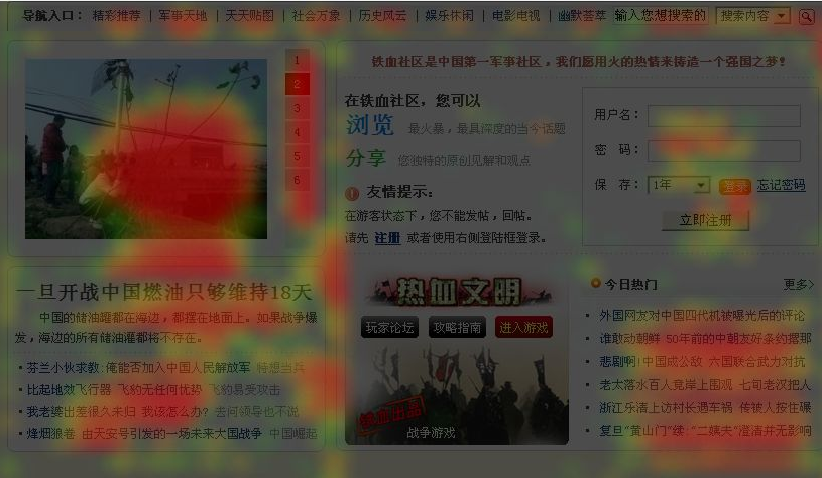

?
?
var pixels = ctx.getImageData(x, y, width, height).data; ... ctx.putImageData(pixels, x, y);
About Me
About Baidu EFE
Agenda
- 前端的可视化手段
-
Canvas 在 ECharts 中的应用
Why Canvas ?
碰到的问题以及方案
-
WebGL 在 ECharts-X 中的应用
航班路线可视化
洋流可视化
前端的可视化手段
可视化库
- Processing
- D3.js
-
ECharts
ECharts-X, 图说
- Highcharts
- ...
图形接口
- SVG
- Canvas
- WebGL
Canvas 在 ECharts 中的应用
Why Canvas ?
-
具备更多的能力和可能性
像素操作
性能
-
与 WebGL 结合更好
作为纹理
Canvas 的问题
-
图形的管理
层级 Hierarchy
样式 Style
变换 Transform
- 事件的判断和分发
图形的管理 - 层级树

图形的管理 - 绘制
-
遍历层级树
更新 Transform
过滤不可见的节点
生成渲染列表
-
渲染列表排序
z, zlevel
- 遍历渲染列表依次绑定样式进行绘制

判断鼠标是否在图形上
-
包围盒判断
快，不精确
-
isPointInPath
每次都需要重新构建路径
excanvas 不支持
不支持描边
- 完全 JS 实现？
包围盒判断
-
包围盒计算
直线和曲线的端点
圆弧的极值
- 适合文字，图片, 和粗略的筛选
-
 ?
?
JS 实现鼠标位置与路径的相交
-
填充（Fill）路径
Non Zero Winding Rule
-
描边（Stroke）路径
计算点到线段和曲线的位置
填充 - Non Zero Winding Rule

直线，贝塞尔，圆弧
描边
- 找出鼠标位置在线段和曲线上距离最短的投影点
- 计算投影点和位置的距离
- 判断距离是否小于描边的宽度
路径代理
var path = new Path(ctx);
path.moveTo(...);
path.lineTo(...);
...
if (path.contain(x, y)) {...}
if (path.containStroke(x, y)) {...}
像素操作
Pixel Layout - Uint8ClampedArray
像素操作案例 - 全国 GDP 网格分布
var imgData = ctx.createImageData(w, h);
var pixels = imgData.data;
for (var j = 0; j < h; j++)
for (var i = 0; i < w; i++) {
var idx = (j * w + i) * 4;
var value = ...;
pixels[idx + 1] = value;
pixels[idx + 2] = value;
pixels[idx + 3] = value;
}
}
ctx.putImageData(imgData, 0, 0);

var m = pow(2, exposure); value *= m;
曝光值调整
颜色映射 - 一维颜色查找表
页面点击热力图
特效绘制 - 百度迁徙
-
连线绘制
直线，贝塞尔曲线
-
动画效果
线性，贝塞尔插值
-
尾迹
残影
残影绘制 - 动态模糊
保留上一帧的图片，与当前帧混合
backCtx.drawImage(canvas, 0, 0, width, height);
ctx.clearRect(0, 0, width, height);
ctx.globalAlpha = 0.9;
ctx.drawImage(backCanvas, 0, 0, width, height);
ctx.globalAlpha = 1;
....
WebGL 在 ECharts-X 中的使用
二维绘制加速 - Point Cloud
gl.drawArrays(gl.POINTS, 0, vertexCount);
Vertex Shader
attribute float size; ... gl_PointSize = size; ...
Fragment Shader
gl_FragColor = color * texture2D(sprite, gl_PointCoord);
人均 GDP 网格分布 - 三维直方图
- 长方体集合
- 高度属性表达数据维度
明暗面 - Lambert Shading

全球人口分布 - ECharts
飞行航线可视化
-
绘制贝塞尔曲线
WebGL 只支持直线绘制 - 曲线细分
-
Shader 计算动画的小点位置
减小 JS 顶点的计算以及传输开销
float onet = 1.0 - t; vec3 position = onet * onet * (onet * p0 + 3.0 * t * p1) + t * t * (t * p3 + 3.0 * onet * p2); -
尾迹
多个不透明度逐渐衰减的图形
向量场与粒子运动
Shader 计算粒子位置
WebGL 中的残影效果
Canvas 与 WebGL 结合
绘制
- 重绘 Canvas
- 更新纹理
交互
- 3D 射线求交
- 得到交点在三角面片的重心坐标
- 计算出在 Canvas 中的坐标
- 2D 图形拾取